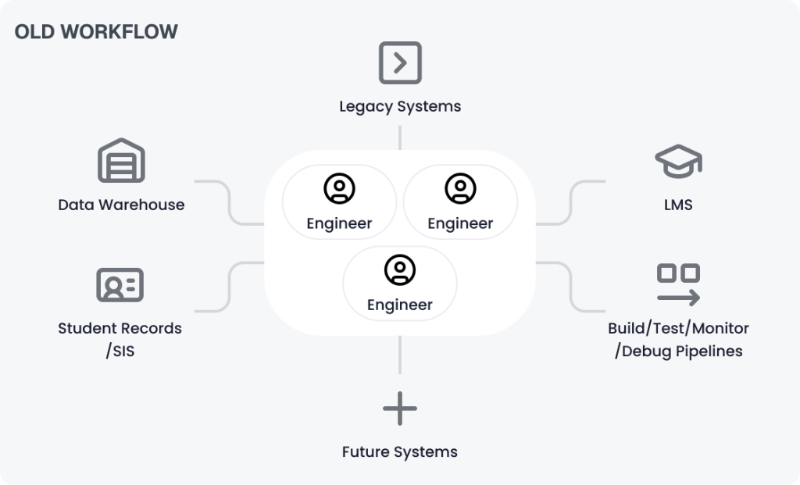
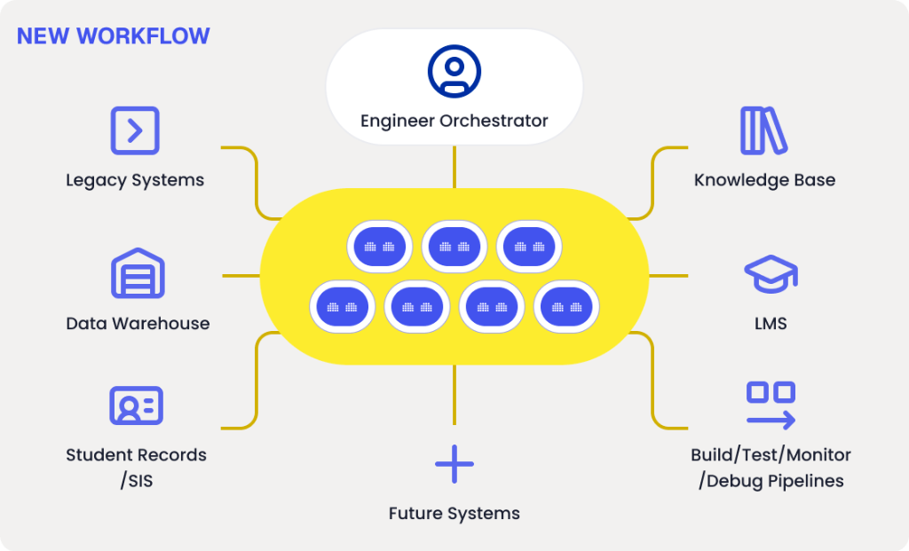
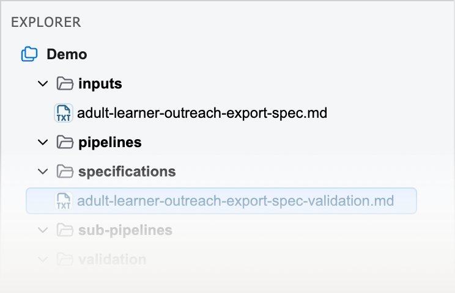
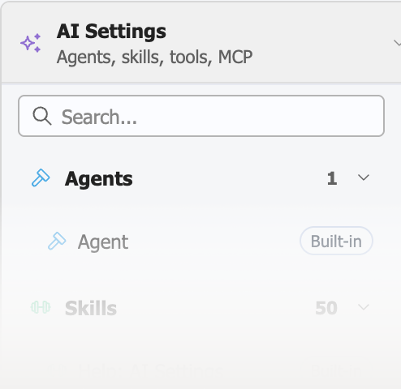
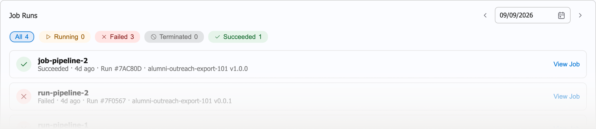
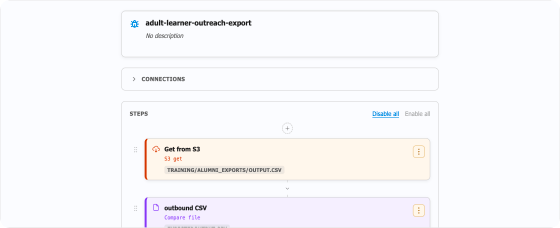
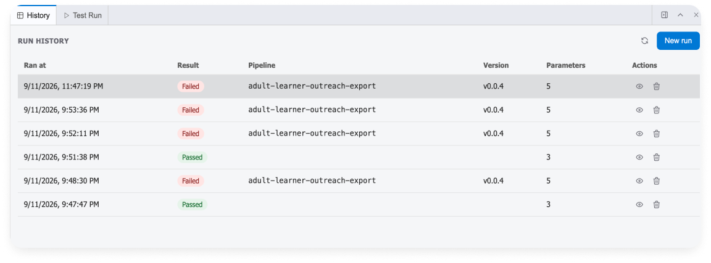

Sync student contact records to a new SaaS platform
Requirements → Design → Mappings → Implementation → Tests → Deployment
Every Banner or Colleague integration becomes its own engineering project — whether it connects the SIS to an LMS, data warehouse, finance system, identity platform, CRM, or a new SaaS application.
The problem is not only the amount of manual work. It is how much engineering knowledge gets created — and then lost.
Requirements live in one place. Mappings in another. Decisions are buried in meetings and tickets. Tests are separated from the reasoning behind them. The implementation ends up in a repository that explains what the code does, but not necessarily why.
And often, the most important part of the system still lives in the heads of the engineers who built it. We started where we know the terrain. Banner. Colleague. Ethos. Ellucian Data Connect.

AI started as autocomplete. Then chat. Then code generation. Now agents can participate in the engineering process itself — analyzing code, reasoning across artifacts, generating implementations, executing tests, and iterating on the results.
In the traditional model, the integration engineer is wired directly into every part of the institution's ecosystem — Banner or Colleague, the data warehouse, the LMS, legacy applications, and whatever comes next. The engineer carries the context and manually moves the work from one system and one step to another.
Akaden introduces a new layer between the engineer and those systems: specialized AI agents that analyze, design, build, test, and carry project context across the workflow. The systems stay the same. The steps stay the same — prepare, specify, build, test, deploy, validate. What changes is who executes them, and how much the engineer has to hold in their head to do it.

Generic coding agents understand software. Akaden is being built around the integration technologies, data models, and modernization patterns higher-ed institutions actually use.

Banner, Colleague, Ethos APIs, Ellucian Data Connect, institutional data models, integration patterns, legacy technologies, and SaaS target architectures.

Analysis, design, implementation, testing, deployment, and maintenance.

Requirements, mappings, source code, generated artifacts, tests, decisions, and execution history.
The result is an engineering environment built around agents.
Akaden doesn't treat AI interactions as isolated conversations. What the analysis uncovers becomes context for design, what design decides becomes context for implementation, and what gets built becomes input to testing — with every test result carried forward as project history. The result is the integration, together with the knowledge needed to understand, validate, and maintain it.


The real question wasn't code. As we introduced agentic AI into real Banner, Colleague, and higher-ed integration modernization projects, the real question wasn't whether AI could write code — it was how much of the engineering process it could take on, with the right tools, domain knowledge, project context, and human supervision.
Akaden is our answer. The engineering environment we're building around it.
A legacy Banner PL/SQL integration. A Colleague UniBasic program that needs to move to SaaS. A Data Connect pipeline you need to build. An Ethos integration sitting in the backlog. Or the campus integration nobody wants to touch because the person who built it is gone.
We'll show you what the engineering process looks like with Akaden.
“Akaden gives integration engineers a single place to analyze requirements, generate pipelines, test APIs, and troubleshoot issues — letting us focus on solving business problems instead of managing tools.
No. Coding is one part of the workflow, but Akaden is designed around the broader integration engineering lifecycle: understanding existing systems, design, implementation, testing, deployment, and maintenance.
No. Akaden is designed to change where engineers spend their time. Agents take on more of the mechanical work, while engineers remain responsible for goals, architecture, review, decisions, and approval.
Akaden is focused today on the Ellucian higher-ed ecosystem: Banner, Colleague, Ethos APIs, and Ellucian Data Connect, including both new integration development and modernization of existing integrations.
That is one of its core use cases. Existing code, pipelines, mappings, specifications, and related artifacts can become inputs to the analysis and modernization workflow.
No. A practical starting point is a single integration or modernization problem. That makes it possible to evaluate the workflow on real engineering work before expanding its use.
Akaden combines agents with integration-specific domain knowledge and persistent project context. The goal is not a better prompt. It is a repeatable engineering workflow where the artifacts and knowledge created in one stage carry into the next.
Bring us an integration problem — something you need to build, modernize, understand, or maintain. We'll use that context to show how Akaden approaches the engineering workflow.